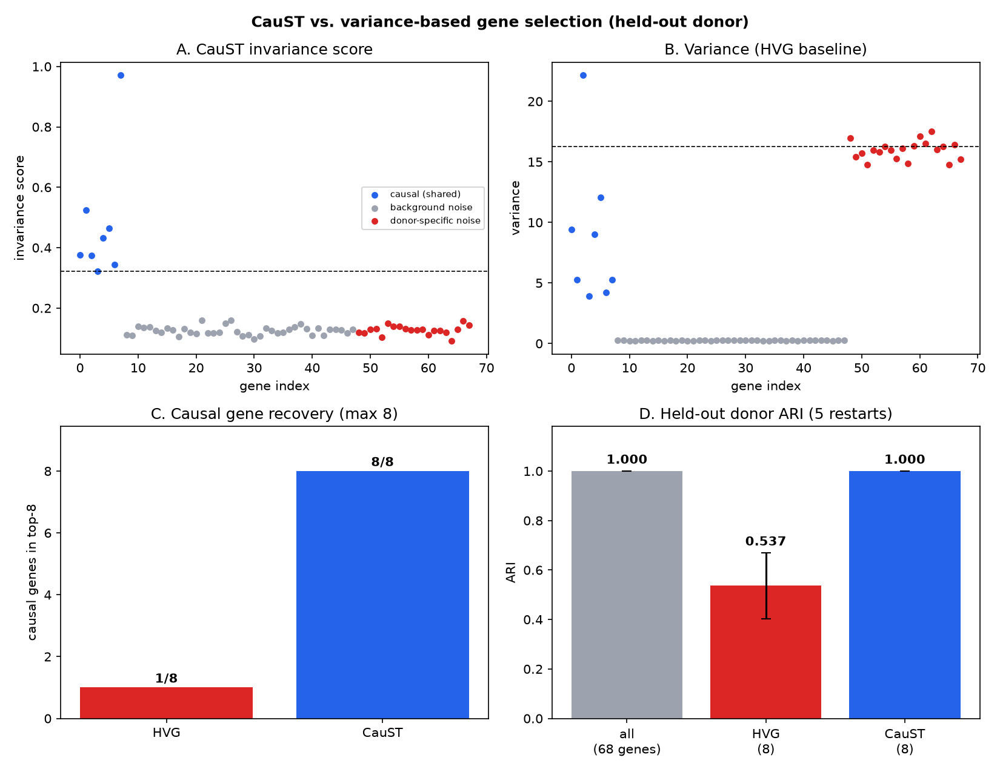
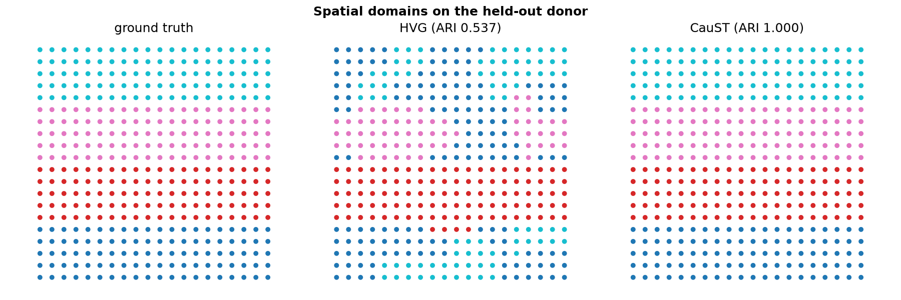
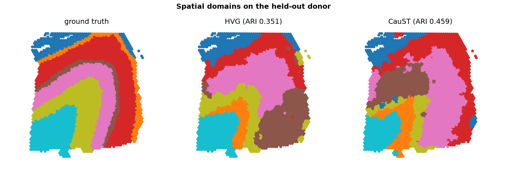

Five-minute demo¶
A guided tour of CauST that runs end-to-end from a fresh clone. Total compute time is under two minutes on a laptop (plus a one-time ~60 MB data download for the real-tissue section); the only prerequisite is uv.
Every command below is copy-pasteable from the repository root.
1. Setup — one command¶
git clone https://github.com/land-saas/CauSt.git && cd CauSt
uv sync
uv sync reads the committed uv.lock, fetches the interpreter pinned in
.python-version if it is missing, and builds .venv with the package and all
dev tooling — the same locked environment CI and the Docker image use. There is
nothing to activate; uv run handles that from here on.
2. The idea, live¶
uv run scripts/demo.py
Three synthetic donors share eight CAUSAL_* genes that define the spatial
domains in every donor. Each donor also has private DONORNOISE_* genes with
higher variance but no cross-donor signal — exactly the trap that
variance-based gene selection falls into.
CauST silences each gene in-silico on a frozen spatial model, measures the embedding shift per donor, and keeps genes whose effect is large and stable across donors. Watch the ranking:
Top-12 genes by invariance score:
CAUSAL_7 0.9758 <-- causal
CAUSAL_1 0.5160 <-- causal
...
NOISE_13 0.1539
Causal genes recovered in top-8: 8/8
ARI on causal gene set (donor 0): 1.000
All eight causal genes rank above every noise gene, and clustering on just those eight recovers the ground-truth domains perfectly.
3. The headline benchmark — CauST vs. HVG on a held-out donor¶
uv run scripts/benchmark.py --figures docs/figures
Genes are selected on donors 1–2 only; donor 3 is never seen during selection. That held-out donor is the robustness claim:
Causal genes recovered in the top-8:
HVG 1/8
CauST 8/8
Held-out donor 3 (never used for gene selection, 5 restarts):
ARI all genes (68 genes) 1.000 +/- 0.000
ARI HVG ( 8 genes) 0.537 +/- 0.133
ARI CauST ( 8 genes) 1.000 +/- 0.000
CauST matches the all-genes ceiling with 8× fewer genes, while the variance baseline at the same budget loses ~0.46 ARI — and is unstable across clustering seeds (±0.133) where CauST is exactly stable (±0.000).
The command also regenerates the two figures:

Panels A and B are the crux: the invariance score isolates the causal genes, while variance ranks the donor-specific noise genes highest.

4. The same claim on real tissue¶
The synthetic trap is engineered, so the honest question is whether the story survives contact with real data:
uv run caust run -c configs/experiment/dlpfc_holdout.yaml --figures
The first run fetches five 10x Visium slices of human dorsolateral prefrontal
cortex from the spatialLIBD DLPFC dataset (~60 MB, cached under data/DLPFC/
and verified against SHA-256 checksums pinned in the package). Three donors,
manual cortical-layer annotations (L1–L6 + white matter). Genes are selected
using the two training donors only; the third donor is evaluated exactly once,
and the tuning knobs (lambda, gene budget) were chosen by sweeping on the
training donors alone.
known layer markers kept in the top-25 (of 8 in pool):
HVG 2/8
CauST 1/8
held-out donor:
ARI all_genes (2000 genes) 0.378 +/- 0.026
ARI hvg ( 25 genes) 0.351 +/- 0.034
ARI caust ( 25 genes) 0.459 +/- 0.069
Twenty-five CauST-selected genes beat the variance baseline at the same budget by +0.11 ARI on a donor the selection never saw — and beat the full 2,000-gene candidate pool. The selected set is biologically legible, too: it includes MBP (myelin / white matter), CLU and SPARCL1 (astrocytic genes with laminar expression), and NRGN (neurogranin), alongside metabolic and ribosomal genes whose laminar gradients happen to be donor-stable. It is not dominated by the textbook marker panel (the marker count above is reported, not hidden) — CauST optimizes for cross-donor predictive stability, not for matching a curated list.

The run takes about ten seconds once the data is cached. That speed is not free: scoring a knockout for each of 2,000 genes across five slices is cheap because the reference backbone computes each knockout as a rank-1 update to the base embedding instead of a fresh forward pass.
5. Every number is reproducible¶
Each run writes a content-addressed directory under results/ with the
resolved config, the metrics, and a provenance manifest (git commit, package
versions, platform, seed, BLAS thread counts, artifact checksums).
uv run caust verify results/synthetic_holdout-*/
uv run caust verify results/dlpfc_holdout-*/
REPRODUCED: results/synthetic_holdout-0759a2e2cbad matches a fresh run of its recorded config
REPRODUCED: results/dlpfc_holdout-bdf4a4109c47 matches a fresh run of its recorded config
And determinism is not an accident — two separate processes produce byte-identical artifacts (CI enforces this on every push):
make determinism
OK: artifacts are byte-identical across processes
See REPRODUCIBILITY.md for what is controlled and how.
6. Quality gates¶
make check
Runs ruff, mypy, and the 98-test suite with a 90% coverage gate (currently ~94%), through the same locked environment. CI additionally proves the built sdist/wheel install and test cleanly on Python 3.9–3.12.
What you just saw¶
- A causal claim, tested honestly — gene selection on training donors, evaluation on a held-out donor, against the standard HVG baseline; first on a synthetic cohort built to embarrass variance-based selection, then on real human cortex where nothing was engineered to cooperate.
- One lockfile everywhere —
uv.lockbacks local dev, CI, and Docker;uv syncrebuilds the exact environment on any machine. - Provenance by default — every result carries the config, seed, and
environment that produced it, and
caust verifyre-earns it on demand.